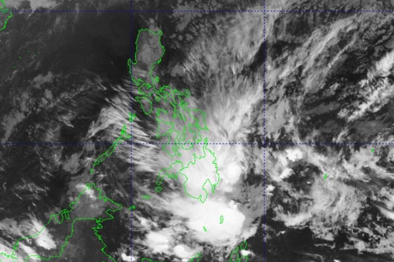

Published January 30, 2024
The northeast monsoon (amihan) and the trough of the Low Pressure Areas (LPA) will bring cloudy skies, rains over parts of the country on Tuesday, PAGASA reported.
Caraga, Davao Region, Camiguin, Misamis Oriental, Bukidnon, and Southern Leyte will have cloudy skies with scattered rain showers and thunderstorms due to the trough of the LPA with flash floods or landslides possibly occurring due to moderate to at times heavy rains.
Cagayan Valley, Aurora, Quezon, Bicol Region, and the rest of Eastern Visayas will have cloudy skies with light rains due to the northeast monsoon with no significant impact.
Metro Manila and the rest of Luzon and Visayas will have partly cloudy to cloudy skies with isolated light rains due to the northeast monsoon with no significant impact.
The rest of Mindanao will have partly cloudy to cloudy skies with isolated rain showers or thunderstorms due to the trough of LPA and localized thunderstorms with possible flash floods or landslides occurring during severe thunderstorms.
The wind speed forecast for Southern Luzon, Visayas, and the northern and eastern sections of Mindanao is strong and moving in the northeast to north direction while coastal waters will be rough.
For Northern Luzon, wind speed forecast is moderate to strong and moving in the northeast to east direction with moderate to rough coastal waters.
The rest of the country will experience moderate to strong wind speed moving in the northeast to north direction while coastal waters will be moderate to rough.